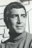

Also known as:Night of the Dark Full Moon (original title)
Country:United States, 85 minutes
Spoken languages:English
Genres:Thriller, Horror, Mystery
Director(s):Theodore Gershuny
Writer(s):Jeffrey Konvitz, Theodore Gershuny, Ira Teller
Video Codec:Unknown
Number: 125


Certification:R
Storyline:
On Christmas Eve 1950, Wilfred Butler dies in a burning accident outside his mansion in East Willard, Massachusetts. The residence is bequeathed to his grandson, Jeffrey. Twenty years later, lawyer John Carter arrives in East Willard on Christmas Eve with his assistant and mistress Ingrid, having been charged by Jeffrey (now registered as a patient in a mental asylum) to sell the house. The house, the town, even Jeffrey himself — all hold dark secrets that will be brought to light.
Cast: 


Medium: Original DVD,
Comments: Part of: 100 Greatest Horror Classics
Loaned: No
Aspect ratio: Unknown